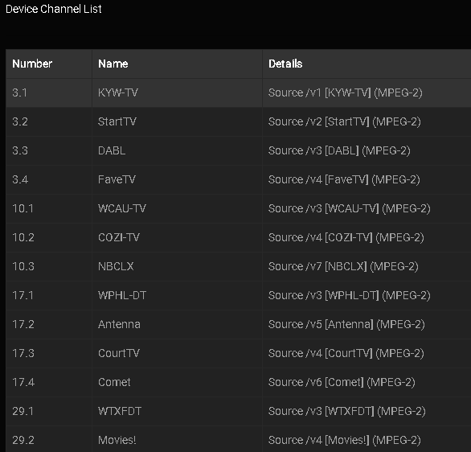

NextPVR Tuner
Emby Live TV unterstützt die Einrichtung von NextPVR als TV-Tuner-Quelle. Sobald NextPVR eingerichtet und einsatzbereit ist, lässt es sich sehr einfach zu Emby hinzufügen. Sie müssen keine Programmdaten in NextPVR einrichten, da wir dies in Emby erledigen werden.
Klicken Sie im Web-Admin auf die Menüoption Live TV und Sie sehen einen Bildschirm, der so ähnlich aussieht.

Klicken Sie auf das Pluszeichen neben TV-Quellen und Sie erhalten den folgenden Bildschirm:
Wählen Sie die Option M3U Tuner aus und richten Sie NextPVR ähnlich wie auf diesem Bild ein:
Geben Sie im letzten Feld die Anzahl der Streams ein, die Ihr Anbieter Ihnen zur Verfügung stellt. Sie müssen die IP & Port in der URL an Ihr System anpassen. NextPVR verwendet folgendes Format:
http://IP:PORT/service?method=channel.m3u
Wenn nicht Emby Server Version 4.7+ genutzt wird
Sie müssen jede URL-Zeile (suchen und ersetzen) ändern, um einen einzigartigen Tag einzufügen. Ich schlage vor, die Kanalnummer zu verwenden. Fügen Sie also &client=1 am Ende jeder URL hinzu. Ändern Sie 1, um der Kanalnummer zu entsprechen. Dies wird in Emby Server automatisch in den Versionen 4.7 und höher erledigt!
#EXTM3U
#EXTINF:-1 tvg-chno="1",Kanalname für 1
http://IP:PORT/live?channel=1&client=1
#EXTINF:-1 tvg-chno="2",Kanalname für 2
http://IP:PORT/live?channel=2&client=2
#EXTINF:-1 tvg-chno="3",Ihr Kanalname für 3
http://IP:PORT/live?channel=3&client=3
Reales Anwendungsbeispiel So zeigt NextPVR v5 die Kanäle an

#EXTM3U
#EXTINF:-1 tvg-chno="3.1",KYW-TV
http://127.0.0.1:8866/live?channel=3.1&client=3.1
#EXTINF:-1 tvg-chno="3.2",StartTV
http://127.0.0.1:8866/live?channel=3.2&client=3.3
#EXTINF:-1 tvg-chno="3.3",DABL
http://127.0.0.1:8866/live?channel=3.3&client=3.3
#EXTINF:-1 tvg-chno="3.4",FaveTV
http://127.0.0.1:8866/live?channel=3.4&client=3.4
#EXTINF:-1 tvg-chno="10.1",WCAU-TV
http://127.0.0.1:8866/live?channel=10.1&client=10.1
#EXTINF:-1 tvg-chno="10.2",COZI-TV
http://127.0.0.1:8866/live?channel=10.2&client=10.2
#EXTINF:-1 tvg-chno="10.3",NBCLX
http://127.0.0.1:8866/live?channel=10.3&client=10.3
#EXTINF:-1 tvg-chno="17.1",WPHL-DT
http://127.0.0.1:8866/live?channel=17.1&client=17.1
#EXTINF:-1 tvg-chno="17.2",Antenna
http://127.0.0.1:8866/live?channel=17.2&client=17.2
#EXTINF:-1 tvg-chno="17.3",Antenna
http://127.0.0.1:8866/live?channel=17.3&client=17.3
#EXTINF:-1 tvg-chno="17.4",NBCLX
http://127.0.0.1:8866/live?channel=17.4&client=17.4
#EXTINF:-1 tvg-chno="29.1",WTXFDT
http://127.0.0.1:8866/live?channel=29.1&client=29.1
#EXTINF:-1 tvg-chno="29.2",Movies!
http://127.0.0.1:8866/live?channel=29.2&client=29.2
Note
Wenn Sie NextPVR 5.1.1 oder höher verwenden, müssen Sie in NextPVR unter Einstellungen -> Zugriff "Unauthenticated Access" aktivieren, da sonst Ihre Live-URLs fehlschlagen werden.